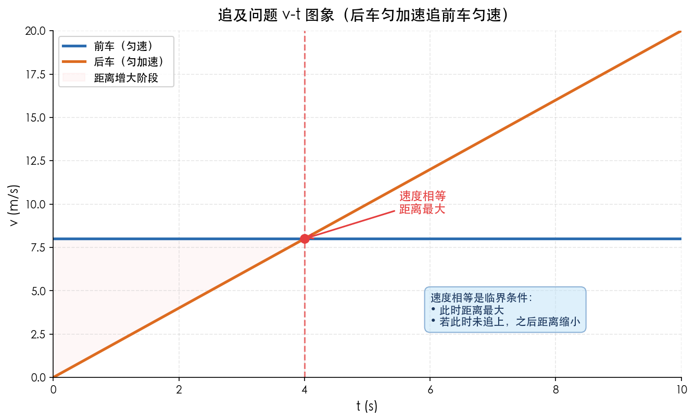
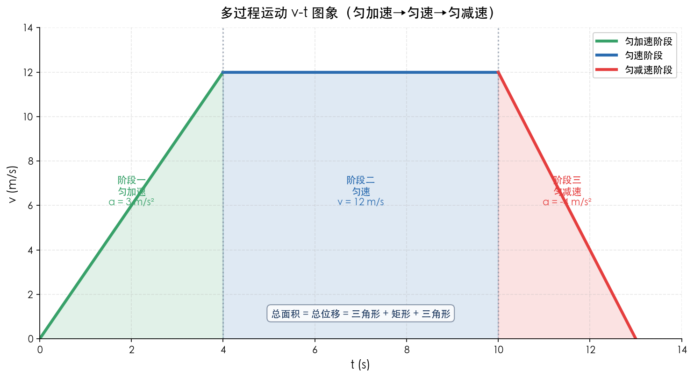

本讲义与《运动学复习讲解》视频、网页课件三件套配套，内容完全一致，呈现形式不同：视频适合「听 + 跟着推」，课件适合翻页回看，本讲义适合静心阅读、做笔记与系统推导。建议三者配合使用——先看视频建立整体框架，再读讲义推导与例题，最后翻课件查漏。
运动学是高中物理的开篇章节，也是整个力学乃至电磁学的基础。这部分内容的核心是描述物体的运动——用哪些物理量描述？这些物理量之间有什么关系？如何用数学工具（公式、图象）来表达和分析运动？
| 物理量 | 位移 | 路程 |
|---|---|---|
| 定义 | 从初位置到末位置的有向线段 | 物体运动轨迹的长度 |
| 性质 | 矢量（有大小、有方向） | 标量（只有大小，没有方向） |
| 大小 | 与路径无关，只与初末位置有关 | 与路径有关 |
| 联系 | 单向直线运动中，位移大小 = 路程 | 路程 ≥ 位移大小 |
深度思考：为什么要引入位移这个概念？因为在很多物理问题中（比如动能定理、势能变化），我们关心的是初末位置的变化，而不是具体走了什么路径。位移这个矢量概念，是我们用数学精确描述运动的第一步。
| 物理量 | 平均速度 | 瞬时速度 |
|---|---|---|
| 定义 | 位移与时间的比值 | 当 $\Delta t \to 0$ 时，$\frac{\Delta x}{\Delta t}$ 的极限值 |
| 公式 | $\bar{v} = \dfrac{\Delta x}{\Delta t}$ | $v = \lim_{\Delta t \to 0} \dfrac{\Delta x}{\Delta t}$ |
| 物理意义 | 粗略描述一段时间内运动的快慢和方向 | 精确描述某一时刻（位置）运动的快慢和方向 |
| 矢量性 | 矢量，方向与位移方向相同 | 矢量，方向沿运动轨迹的切线方向 |
| 对应关系 | 与一段时间（位移）对应 | 与一个时刻（位置）对应 |
重要辨析：
- 匀速直线运动中，平均速度等于瞬时速度
- 平均速度的大小 ≤ 平均速率
- 速度是矢量，速率是标量，永远不能说"速度等于速率"
| 概念 | 含义 | 关系 |
|---|---|---|
| 速度大 | 运动得快 | 速度大，加速度不一定大（如匀速飞行的飞机） |
| 速度变化量大 | 速度改变得多 | $\Delta v$ 大，加速度不一定大（还要看时间） |
| 加速度大 | 速度变化得快 | 加速度大，速度不一定大（如刚启动的火箭） |
经典易错判断：
- ❌ "物体速度为零，加速度一定为零" —— 错！（竖直上抛最高点，$v=0$，但 $a=g$）
- ❌ "加速度为零，速度一定为零" —— 错！（匀速直线运动，$a=0$，但 $v \neq 0$）
- ❌ "加速度增大，速度一定增大" —— 错！（如果 $a$ 与 $v$ 反向，$a$ 越大，$v$ 减小得越快）
- ✅ 判断速度是增大还是减小：看加速度与速度的方向关系，同向加速，反向减速
推导过程：由加速度的定义式出发：$$a = \frac{v - v_0}{t}$$整理得：$$\boldsymbol{v = v_0 + at}$$
说明：
推导过程：匀变速直线运动中，速度是均匀变化的，所以平均速度等于初末速度的平均值：$$\bar{v} = \frac{v_0 + v}{2}$$位移 = 平均速度 × 时间：$$x = \bar{v} \cdot t = \frac{v_0 + v}{2} \cdot t$$将 $v = v_0 + at$ 代入：$$x = \frac{v_0 + v_0 + at}{2} \cdot t = \frac{2v_0 + at}{2} \cdot t$$$$\boldsymbol{x = v_0 t + \frac{1}{2} a t^2}$$
说明：
推导过程：从速度公式解出时间：$t = \dfrac{v - v_0}{a}$代入位移公式：$$x = v_0 t + \frac{1}{2} a t^2 = v_0 \cdot \frac{v - v_0}{a} + \frac{1}{2} a \cdot \left( \frac{v - v_0}{a} \right)^2$$$$= \frac{v_0 v - v_0^2}{a} + \frac{1}{2} a \cdot \frac{(v - v_0)^2}{a^2}$$$$= \frac{v_0 v - v_0^2}{a} + \frac{(v - v_0)^2}{2a}$$通分：$$= \frac{2(v_0 v - v_0^2) + (v^2 - 2v_0 v + v_0^2)}{2a}$$$$= \frac{2v_0 v - 2v_0^2 + v^2 - 2v_0 v + v_0^2}{2a}$$$$= \frac{v^2 - v_0^2}{2a}$$所以：$$\boldsymbol{v^2 - v_0^2 = 2ax}$$
说明：
三个基本公式的选用原则：
- 已知量和待求量中有 $v$、$v_0$、$a$、$t$ → 用速度公式
- 已知量和待求量中有 $x$、$v_0$、$a$、$t$ → 用位移公式
- 已知量和待求量中有 $v$、$v_0$、$a$、$x$ → 用速度位移公式
- 原则：哪个公式含的已知量最多、未知量最少，就先用哪个
结论：$$\boldsymbol{\bar{v} = v_{\frac{t}{2}} = \frac{v_0 + v}{2}}$$
推导过程：设总时间为 $t$，初速度 $v_0$，末速度 $v$，加速度 $a$
中间时刻的瞬时速度：$$v_{\frac{t}{2}} = v_0 + a \cdot \frac{t}{2}$$
平均速度：$$\bar{v} = \frac{x}{t} = \frac{v_0 t + \frac{1}{2} a t^2}{t} = v_0 + \frac{1}{2} a t = v_0 + a \cdot \frac{t}{2}$$
所以：$\bar{v} = v_{\frac{t}{2}}$
又因为 $v = v_0 + at$，所以：$$v_0 + \frac{at}{2} = \frac{2v_0 + at}{2} = \frac{v_0 + v_0 + at}{2} = \frac{v_0 + v}{2}$$
综上：$$\bar{v} = v_{\frac{t}{2}} = \frac{v_0 + v}{2}$$
应用场景：打点计时器求某点的瞬时速度，就用这个推论！
结论：$$\boldsymbol{v_{\frac{x}{2}} = \sqrt{\frac{v_0^2 + v^2}{2}}}$$
推导过程：设总位移为 $x$，初速度 $v_0$，末速度 $v$
前半段位移 $\dfrac{x}{2}$：$$v_{\frac{x}{2}}^2 - v_0^2 = 2a \cdot \frac{x}{2} = ax \tag{1}$$
后半段位移 $\dfrac{x}{2}$：$$v^2 - v_{\frac{x}{2}}^2 = 2a \cdot \frac{x}{2} = ax \tag{2}$$
由(1)(2)得：$$v_{\frac{x}{2}}^2 - v_0^2 = v^2 - v_{\frac{x}{2}}^2$$移项：$$2v_{\frac{x}{2}}^2 = v_0^2 + v^2$$所以：$$v_{\frac{x}{2}} = \sqrt{\frac{v_0^2 + v^2}{2}}$$
比较 $v_{\frac{t}{2}}$ 和 $v_{\frac{x}{2}}$：匀加速运动：$v_{\frac{x}{2}} > v_{\frac{t}{2}}$匀减速运动：$v_{\frac{x}{2}} > v_{\frac{t}{2}}$（不管加速还是减速，中间位置速度都大于中间时刻速度，等号仅在匀速时成立）
结论：$$\boldsymbol{\Delta x = a T^2}$$（逐差公式）
推导过程：设加速度为 $a$，连续相等的时间间隔为 $T$
第1个 $T$ 内的位移：$$x_1 = v_0 T + \frac{1}{2} a T^2$$
第2个 $T$ 内的位移：$$x_2 = (v_0 + aT)T + \frac{1}{2} a T^2 = v_0 T + a T^2 + \frac{1}{2} a T^2 = v_0 T + \frac{3}{2} a T^2$$
第3个 $T$ 内的位移：$$x_3 = (v_0 + 2aT)T + \frac{1}{2} a T^2 = v_0 T + 2a T^2 + \frac{1}{2} a T^2 = v_0 T + \frac{5}{2} a T^2$$
第 $n$ 个 $T$ 内的位移：$$x_n = v_0 T + \frac{2n-1}{2} a T^2$$
位移差：$$\Delta x_1 = x_2 - x_1 = \left( v_0 T + \frac{3}{2} a T^2 \right) - \left( v_0 T + \frac{1}{2} a T^2 \right) = a T^2$$$$\Delta x_2 = x_3 - x_2 = \left( v_0 T + \frac{5}{2} a T^2 \right) - \left( v_0 T + \frac{3}{2} a T^2 \right) = a T^2$$
所以：$$\Delta x = a T^2$$
推广：$$\boldsymbol{x_m - x_n = (m - n) a T^2}$$
应用场景：
- 打点计时器求加速度（逐差法）
- 判断物体是否做匀变速直线运动
前提条件：$v_0 = 0$，匀加速直线运动，从 $t=0$ 开始计时
$$v_1 : v_2 : v_3 : \dots : v_n = 1 : 2 : 3 : \dots : n$$
推导：$v = at$，$v$ 与 $t$ 成正比
$$x_1 : x_2 : x_3 : \dots : x_n = 1^2 : 2^2 : 3^2 : \dots : n^2 = 1 : 4 : 9 : \dots : n^2$$
推导：$x = \frac{1}{2} a t^2$，$x$ 与 $t^2$ 成正比
$$x_Ⅰ : x_Ⅱ : x_Ⅲ : \dots : x_N = 1 : 3 : 5 : \dots : (2N-1)$$
推导：$$x_Ⅰ = x_1 = \frac{1}{2} a T^2$$$$x_Ⅱ = x_2 - x_1 = \frac{1}{2} a (2T)^2 - \frac{1}{2} a T^2 = 2a T^2 - \frac{1}{2} a T^2 = \frac{3}{2} a T^2$$$$x_Ⅲ = x_3 - x_2 = \frac{1}{2} a (3T)^2 - \frac{1}{2} a (2T)^2 = \frac{9}{2} a T^2 - 2a T^2 = \frac{5}{2} a T^2$$所以比值为 $1 : 3 : 5 : \dots$
$$t_1 : t_2 : t_3 : \dots : t_n = 1 : \sqrt{2} : \sqrt{3} : \dots : \sqrt{n}$$
推导：由 $x = \frac{1}{2} a t^2$，得 $t = \sqrt{\dfrac{2x}{a}}$，$t$ 与 $\sqrt{x}$ 成正比
$$t_Ⅰ : t_Ⅱ : t_Ⅲ : \dots : t_N = 1 : (\sqrt{2}-1) : (\sqrt{3}-\sqrt{2}) : \dots : (\sqrt{N} - \sqrt{N-1})$$
推导：$$t_Ⅰ = t_1 = \sqrt{\frac{2x}{a}}$$$$t_Ⅱ = t_2 - t_1 = \sqrt{\frac{4x}{a}} - \sqrt{\frac{2x}{a}} = \sqrt{\frac{2x}{a}} (\sqrt{2} - 1)$$$$t_Ⅲ = t_3 - t_2 = \sqrt{\frac{6x}{a}} - \sqrt{\frac{4x}{a}} = \sqrt{\frac{2x}{a}} (\sqrt{3} - \sqrt{2})$$所以比值为 $1 : (\sqrt{2}-1) : (\sqrt{3}-\sqrt{2}) : \dots$
使用提醒：
- 这些比例关系只适用于初速度为零的匀加速直线运动
- 对于末速度为零的匀减速运动，可以用逆向思维法（反过来看成初速度为零的匀加速），然后再用比例
- 比例法是快速解题的利器，但一定要注意适用条件！
图象是描述物理规律的重要数学工具，也是高考的高频考点。学好图象，要做到三会：会读图、会画图、会用图。
| 图象特征 | 物理意义 |
|---|---|
| 纵坐标 | 某时刻的位置（位移） |
| 横坐标 | 时间 |
| 斜率 | 速度（$k = \dfrac{\Delta x}{\Delta t} = v$） |
| 斜率为正 | 速度方向与正方向相同 |
| 斜率为负 | 速度方向与正方向相反 |
| 斜率绝对值越大 | 速度越大 |
| 水平直线 | 静止（速度为零） |
| 倾斜直线 | 匀速直线运动 |
| 抛物线（曲线） | 匀变速直线运动（速度在变） |
| 两图象交点 | 两物体相遇（同一时刻在同一位置） |
| 纵轴截距 | $t=0$ 时的初始位置 |
x-t 图象的运动类型示例：

| 图象特征 | 物理意义 |
|---|---|
| 纵坐标 | 某时刻的瞬时速度 |
| 横坐标 | 时间 |
| 斜率 | 加速度（$k = \dfrac{\Delta v}{\Delta t} = a$） |
| 斜率为正 | 加速度方向与正方向相同 |
| 斜率为负 | 加速度方向与正方向相反 |
| 斜率绝对值越大 | 加速度越大 |
| 水平直线 | 匀速直线运动（加速度为零） |
| 倾斜直线 | 匀变速直线运动 |
| 曲线 | 变加速运动（加速度在变） |
| 图象与时间轴围成的面积 | 位移（时间轴上方面积为正，下方为负） |
| 两图象交点 | 两物体速度相等（注意：不是相遇！） |
| 纵轴截距 | $t=0$ 时的初速度 |
v-t 图象面积的物理意义：
四种典型运动的 v-t 图象对比：

| 已知 | 求 | 方法 |
|---|---|---|
| x-t 图象 | v-t 图象 | 求各段斜率（速度），分段画出 |
| v-t 图象 | x-t 图象 | 求各段面积（位移），累加画出 |
| v-t 图象 | a-t 图象 | 求各段斜率（加速度），分段画出 |
图象题解题要诀：
- 先看坐标轴：是x-t还是v-t？别一上来就看形状！
- 再看斜率：斜率表示什么物理量？
- 再看面积：面积有没有物理意义？（v-t图面积是位移，x-t图面积无意义）
- 最后看截距和交点：分别代表什么？
追及相遇问题是运动学的重点和难点，也是高考的高频考点。核心是：两个物体在同一时刻到达同一位置。
情景：甲车在前，以速度 $v_1$ 匀速运动；乙车在后，初速度 $v_0$（$v_0 < v_1$），加速度 $a$ 匀加速，初始相距 $x_0$。
分析：
解题步骤：
情景：甲车在前匀速 $v_1$，乙车在后初速度 $v_0$（$v_0 > v_1$），加速度 $a$ 匀减速，初始相距 $x_0$。
分析：
匀加速追匀速的 v-t 图象分析：

记忆技巧：速度相等是临界条件——此时两物体间距最小（或最大），是能否追上/相撞的判断时刻。
| 方法 | 思路 | 适用场景 |
|---|---|---|
| 公式法 | 列位移方程，解方程求时间 | 大多数问题 |
| 图象法 | 画v-t图象，用面积分析 | 过程复杂、需要直观理解 |
| 相对运动法 | 选一个物体为参考系，分析相对运动 | 技巧性强，容易出错（慎用） |
| 数学极值法 | 列距离关于时间的函数，求最小值 | 判断能否追上 |
对于末速度为零的匀减速直线运动，可以把它倒过来看成初速度为零的匀加速直线运动，加速度大小相同。
典型应用：
例题：汽车以 $20\,\mathrm{m/s}$ 行驶，刹车后加速度大小为 $5\,\mathrm{m/s^2}$，求刹车后 $5\,\mathrm{s}$ 内的位移。
常规做法：先算刹车时间 $t = \dfrac{v_0}{a} = 4\,\mathrm{s}$，说明 $5\,\mathrm{s}$ 时车已停，再用 $v^2 = 2ax$ 求位移。
逆向思维：把刹车过程倒过来看——从静止开始以 $5\,\mathrm{m/s^2}$ 匀加速 $4\,\mathrm{s}$，位移 $x = \frac{1}{2} a t^2 = \frac{1}{2} \times 5 \times 16 = 40\,\mathrm{m}$。
刹车问题特别提醒：一定要先算刹车时间！题目给的时间可能比刹车时间长，车早就停下来了。这是高频易错点！
对于竖直上抛运动，上升过程和下落过程具有对称性：
复杂的运动往往是由几个简单的运动过程组成的。处理方法：
典型多过程：先匀加速、再匀速、再匀减速（如电梯运动、汽车起步刹车）
多过程运动的 v-t 图象（匀加速→匀速→匀减速）：

对于全过程加速度不变的运动（如竖直上抛运动），可以对全过程应用运动学公式，不需要分段。
注意：使用时要特别注意各量的正负号，规定好正方向。
以下公式和推论，必须做到合上书能独立推导出来，并且理解每一步的物理意义：
| 序号 | 公式/推论 | 推导思路 | 重要程度 |
|---|---|---|---|
| 1 | $v = v_0 + at$ | 从加速度定义式出发 | ⭐⭐⭐⭐⭐ |
| 2 | $x = v_0 t + \frac{1}{2} a t^2$ | 平均速度法：$\bar{v} = \dfrac{v_0 + v}{2}$ | ⭐⭐⭐⭐⭐ |
| 3 | $v^2 - v_0^2 = 2ax$ | 由前两式消去 $t$ | ⭐⭐⭐⭐⭐ |
| 4 | $\bar{v} = v_{\frac{t}{2}} = \dfrac{v_0 + v}{2}$ | 分别写出 $\bar{v}$ 和 $v_{\frac{t}{2}}$ 的表达式，比较 | ⭐⭐⭐⭐⭐ |
| 5 | $v_{\frac{x}{2}} = \sqrt{\dfrac{v_0^2 + v^2}{2}}$ | 对前后半段位移各用一次速度位移公式 | ⭐⭐⭐⭐ |
| 6 | $\Delta x = a T^2$ | 写出第1个T和第2个T内的位移，求差 | ⭐⭐⭐⭐⭐ |
| 7 | 初速为零的比例关系 | 从基本公式出发，代入各时刻/位移 | ⭐⭐⭐⭐ |
| 8 | $x_m - x_n = (m-n) a T^2$ | $\Delta x = a T^2$ 的推广 | ⭐⭐⭐⭐ |
| 序号 | 易错点 | 正确做法 |
|---|---|---|
| 1 | 位移和路程混淆 | 题目问位移要答大小和方向，问路程答大小 |
| 2 | 平均速度的大小 = 平均速率 | 只有单向直线运动才相等，一般不相等 |
| 3 | 加速度的正负判断速度增减 | 看 $a$ 和 $v$ 的方向关系，不是看 $a$ 的正负 |
| 4 | 刹车问题直接代入时间计算 | 先算刹车时间，判断车是否已停下 |
| 5 | 公式适用条件没注意 | 匀变速公式只适用于 $a$ 恒定的运动 |
| 6 | 矢量不带符号 | 先规定正方向，所有矢量带符号运算 |
| 7 | x-t图和v-t图搞混 | 先看坐标轴！斜率的意义完全不同 |
| 8 | v-t图象交点当相遇 | v-t图交点是速度相等，不是相遇 |
| 9 | 追及问题不判断临界条件 | 先看速度相等时能不能追上 |
| 10 | 结果不检验 | 算完代入原题验证是否合理 |
学习建议：先看视频建立整体框架，再读本讲义做推导与笔记，最后翻课件回看疑点。三件套配合使用，效果最好。
关键词：匀变速直线运动 · 质点 · 位移 · 速度 · 加速度 · 公式推导 · x-t/v-t 图象 · 追及相遇